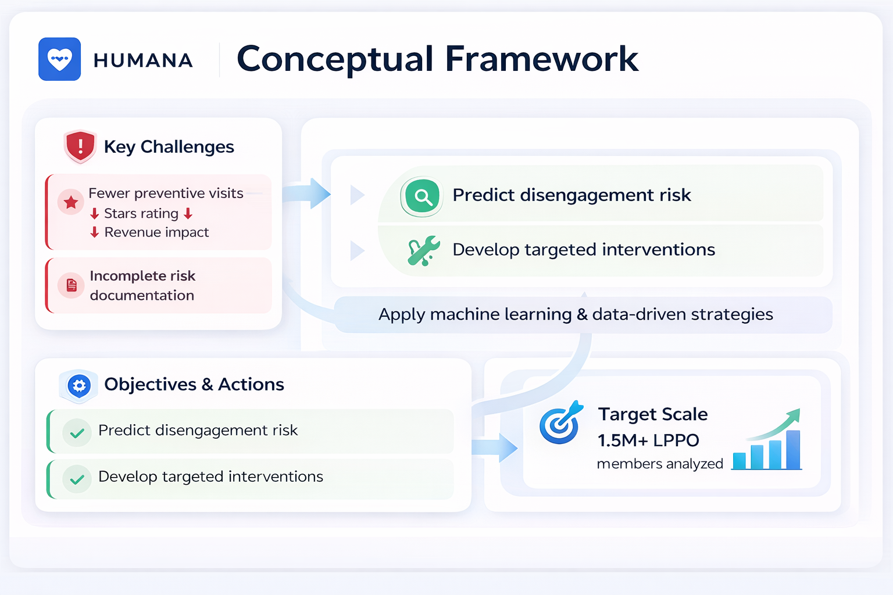
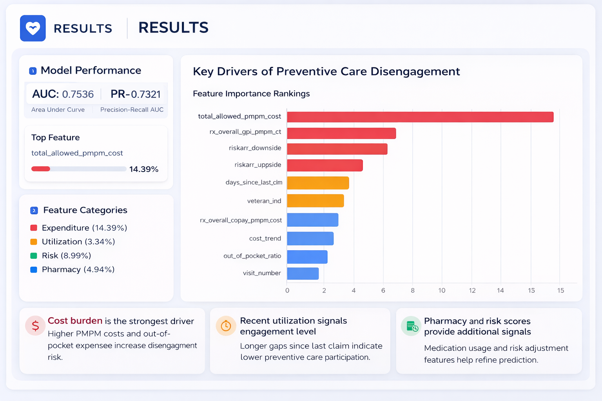

healthcare analytics competition case
Improving Preventive Care Engagement Among Humana's Medicare Advantage Members
— A predictive analytics project to identify unengaged members and guide higher-impact preventive care interventions.

Overview / Description
Preventive care is essential for managing chronic conditions in aging populations. In Humana's Medicare Advantage LPPO plans, members showed much higher disengagement from primary care physicians compared with HMO members.
This disengagement creates two business risks: lower Stars performance from fewer preventive screenings and incomplete risk documentation that can reduce Medicare risk adjustment payments. Our goal was to identify high-risk members and design data-driven engagement strategies.
Objective / Success Metrics
Build a classification model to identify unengaged members and uncover key disengagement drivers.
- ROC-AUC
- PR-AUC
- Recall, with emphasis on minimizing false negatives in an imbalanced dataset
Approach
Data preparation & feature engineering
- Processed over 1.5 million records across Demographic, Claims, Pharmacy, and Web Activity data.
- Engineered features including cost_trend, claims_trend, out_of_pocket_ratio, days_since_last_login, and active-user indicators.
Feature selection
- Used Random Forest to rank importance and reduce noise from 256 initial columns.
- Identified PMPM costs and cost trends as strong predictors of disengagement.
Model selection & tuning
- Compared KNN, Logistic Regression, XGBoost, and LightGBM.
- Selected LightGBM for strong performance on large, imbalanced data.
- Applied Bayesian Optimization (Optuna) and Randomized Search for hyperparameter tuning.

Results / Key Findings
ROC-AUC: 0.7536 | PR-AUC: 0.7321 | True positives: 75,984
Confusion matrix analysis showed strong identification of unengaged members, supporting targeted outreach prioritization.
Impact / Conclusion / Recommendations
Based on the model output, we proposed an 8-step "Illness to Wellness" journey for LPPO members, including:
- Targeted financial assistance for members identified as financially vulnerable.
- AI-driven case management supported by predictive analytics dashboards.
- Expanded home-based care and 24/7 virtual care to reduce logistical barriers.